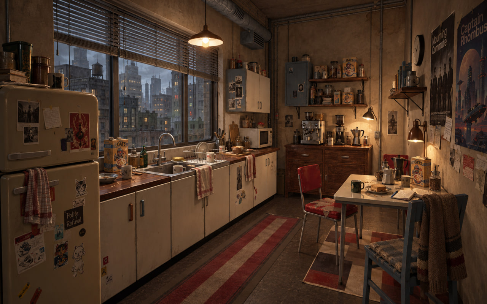
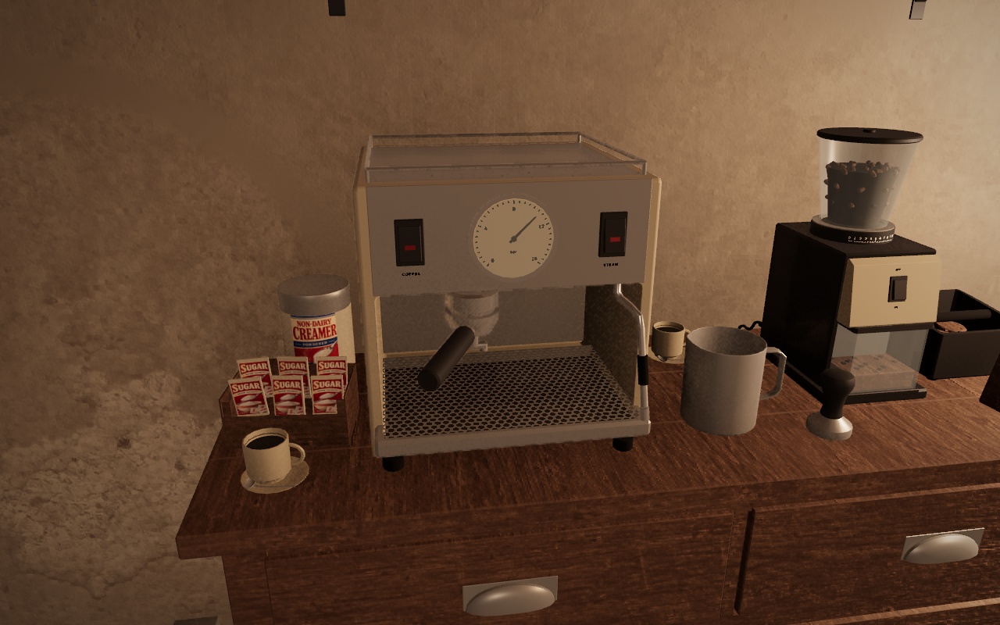
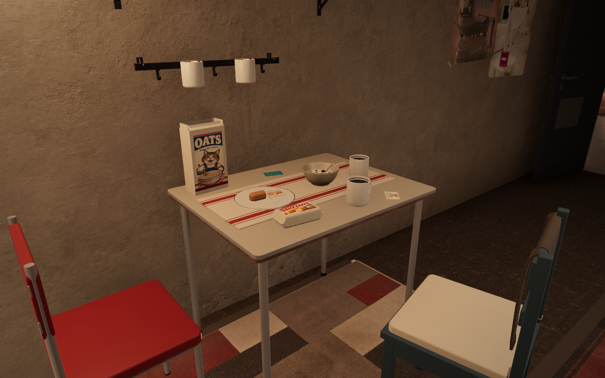
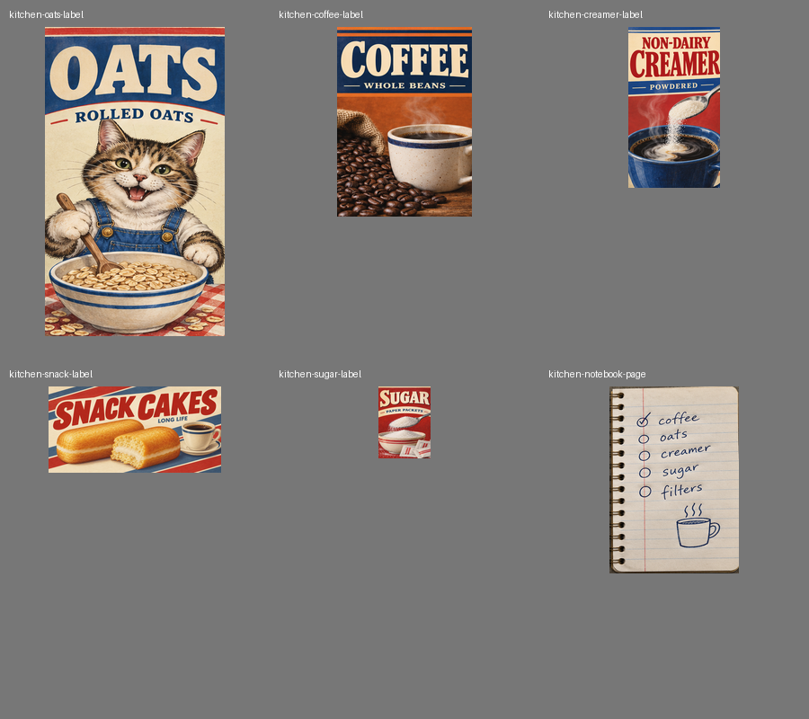
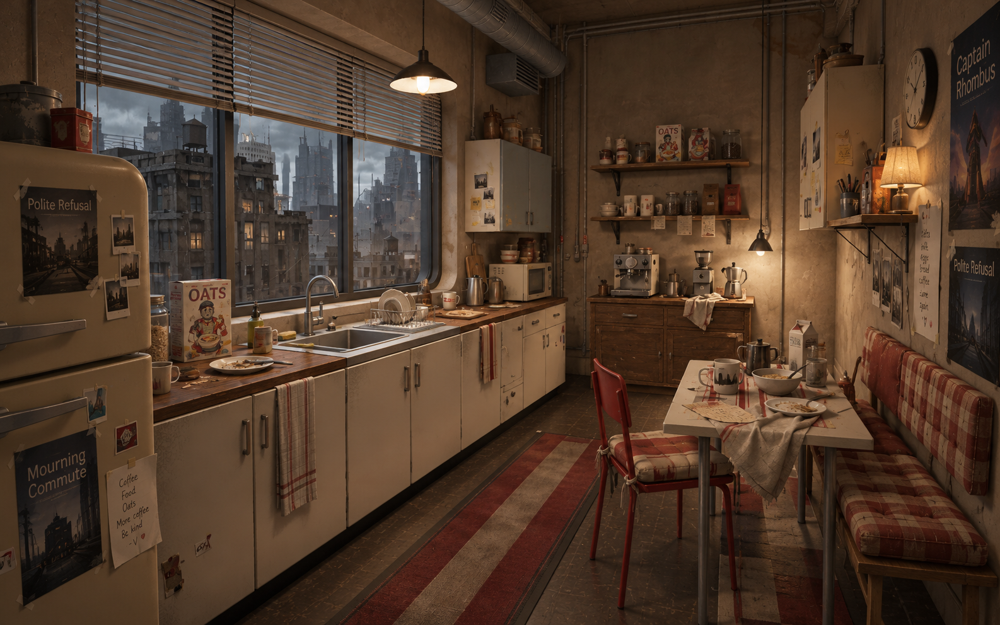
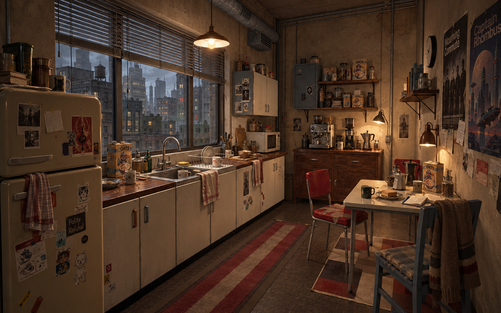
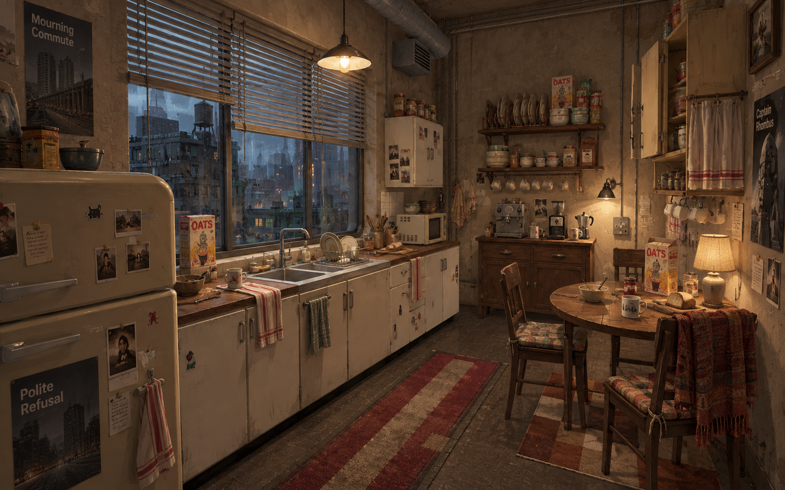
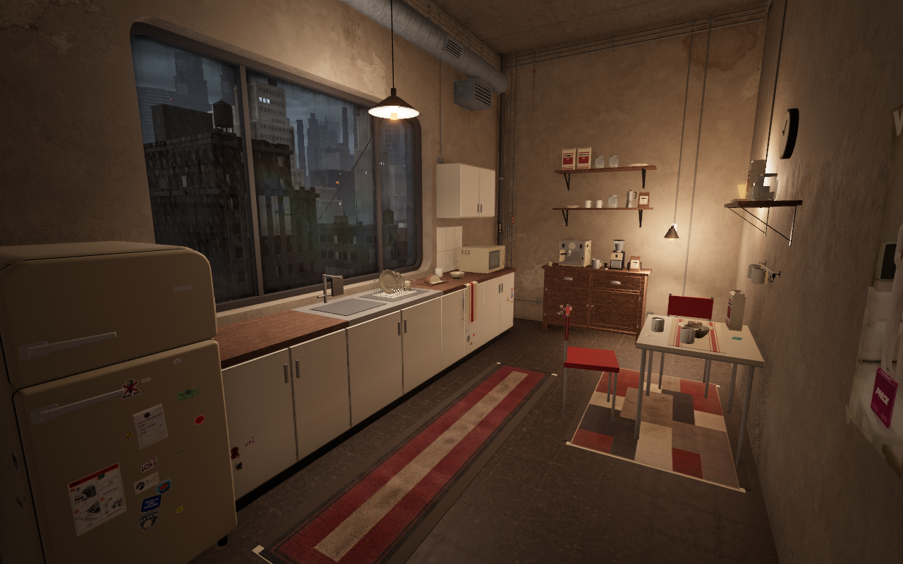
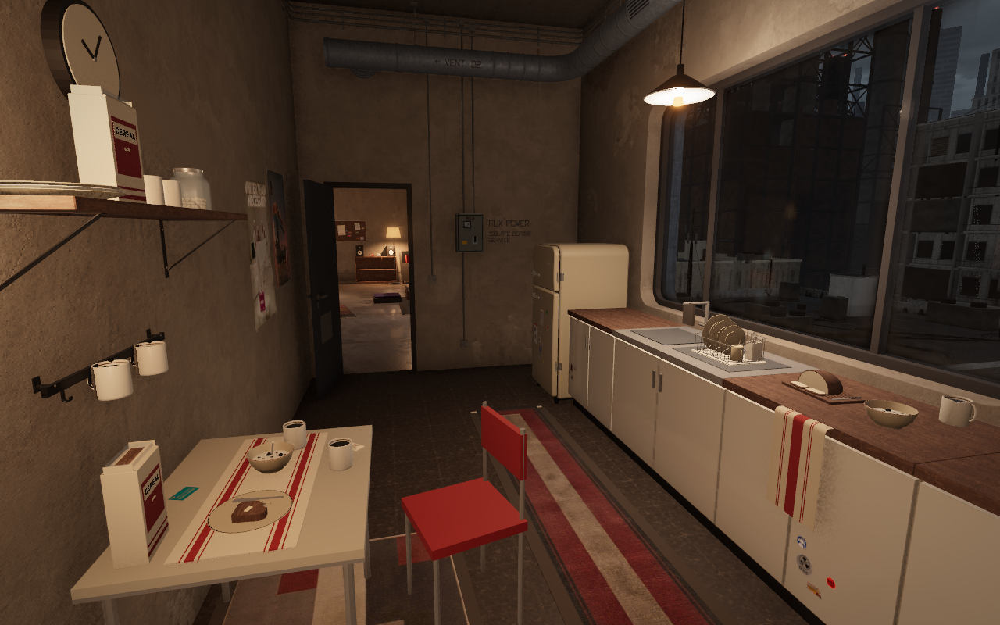

The kitchen: coffee and poster hangout
Vibe collected and repaired this room herself. These concepts add places to settle in, useful rescued storage, illustrated pantry packs and traces of two girls sharing their daily life.
Placement rule for every direction: furnishings find suitable walls and floor space; loose items choose compatible worktops, dining surfaces, shelves and hooks. Changing the room layout must repack them onto the available surfaces. The pictures describe the mood and useful groups, rather than fixed object coordinates.
Matching the approved coffee hangout. The generated reference below remains the target. The actual room now has a varied shelf-stable pantry, illustrated packaging, salvaged cupboards, personal green mugs, plaid towels, a loose knitted throw and warm task lamps. The dish towel has fuller folds and an uneven hem, the table cloth has a softer outline and denser fringe, and the chair throw catches light more softly. These are modest finishing changes. All 140 kitchen objects still choose compatible surfaces automatically, using the existing shared artwork. The wider coffee-hangout concept match remains in progress. Warm kitchen lamps cast shadows beneath shelves and around the coffee gear. A more layered city outlook opens through the kitchen window. Nearby ordinary roofs are shorter, while the composed city landmarks remain. Taller reused oat tins sit among shorter mugs, jars, packets and books. The rescued cupboards retain soft repaint patches, chipped edges and repairs. The shared coffee press and jars retain clear glass. Four household photographs and two handwritten notes remain on compatible fridge and cupboard faces. The larger room composition and softness of the light are still being compared with the reference.
Only shelf-stable food and drinks: oats, coffee, powdered non-dairy creamer, sugar and long-life cakes. No plants. Loose items choose compatible surfaces and reshuffle after furniture edits. The cloth shares the existing print atlas. Cupboard paint reuses the small shared finish atlas.
Reference and current 3D progress
The room is being judged against this picture. Finished asset counts and the automatic comfort score do not measure the visual match.



The window retains its width, sill height, saved rounded corners and mullions, and now reaches higher toward the ceiling. Its blinds follow the opening. The existing city remains. The furniture faces and cloth still look simpler than the generated reference. The shelves have taller mixed stock, and the cupboard doors show gentle repaint variation. Native pictures at noon, dusk and night have a clear doorway, no waiting surface inventory and no missing prop models.
Medium quality · daylight correction
The same room, camera and noon setting before and after the latest correction. The existing reflected daylight field now reaches the kitchen more clearly. A changed layout that gives this room a direct window light disables the fallback automatically.


No extra lights or textures. The dusk pictures above use high quality; this pair shows the medium-tier daytime correction.
Softer used cloth around the kitchen
The towel, table cloth and chair throw are finished together. The towel’s free edge is less rectangular, the table cloth is one woven body with denser untidy fringe, and the throw has fewer hard shading breaks. The standing comparison shows that this is a modest room-scale improvement.


Cloth keeps its fitted surfaces and shared generated artwork. Furniture placement follows usable surfaces when the layout changes. Fine textile art, the fixed 3.8 m architecture and generated camera perspective still differ from the target.
A little more variety beyond the kitchen window
The nearest building keeps its cornice and shaded foreground. Ordinary roofs behind it now sit at different heights. This small change is clearest through the right window pane. Compare the same cameras before and in the actual deployed kitchen.


Furniture, clutter and shared artwork are retained. The city view follows the actual kitchen windows when the layout changes. The room remains3.8m high; generated concept perspective and fine textile detail still differ.
Woven cloth catches the light
The shared artwork now gives the towels, cushions, blanket and dining cloth restrained surface relief. All 140 kitchen objects continue to choose compatible surfaces automatically. Compare matching cameras before and in the actual deployed room.


Existing models and shared textures; no new bitmap. Draws remain 43 / 68 / 98. The room, editing tools and catalog share the finish. Fine fibers and the generated concept’s architectural perspective remain different.
A continuous drape over the salvaged chair
The blanket rolls over a beveled timber rail, retaining its deep folds and uneven hem. All 140 kitchen objects continue to choose compatible surfaces automatically. Shared yarn artwork and the complete chair footprint remain.


4,848 triangles within the 4,900 budget. All fifteen tested hard-part contacts are clear. Draws remain 43 / 68 / 98. Fine textile surface depth and apparent architectural compression still differ from the generated reference.
Wood grain in the actual room
The existing timber artwork now appears on the coffee cupboard, counters and shelves in the room. Grain follows the real planks and framed doors. All 140 kitchen objects continue to choose compatible surfaces automatically, with their placements unchanged.


Existing textures, models, surfaces and lighting remain. Draws stay 43 / 68 / 98. Cloth folds and fine surface depth still differ from the generated reference.
Timber sink and collected shelves
A continuous warm timber edge around the inset steel sink brings the counter closer to the concept. Three existing empty cups find book covers automatically, making the shelves more collected. All 140 kitchen objects retain their identities and use compatible surfaces; no inventory is added.


The sink remains within its 7,000-triangle budget at 4,864 triangles. Its mounting surfaces and plumbing ports remain fixed. Shared artwork keeps the same allocation and thirty other asset regions. Draws remain 43 / 68 / 98. Cloth folds and fine surface depth still differ from the generated reference.
Deeper uneven blanket drape
The existing throw has deeper uneven folds, looser sides and a lower hem. The timber chair and cushion retain their shapes. All 140 kitchen objects choose compatible surfaces automatically; the complete cloth footprint is measured to keep the door path clear. Compare before and the actual deployed kitchen.


Same 4,844 triangles and shared artwork. All fifteen tested hard frame/cushion intersections are empty; soft ties are not included in that test. No new texture or material slot. Draws remain 43 / 68 / 98. The full footprint is 450 × 462 mm. The folds remain more angular than the generated reference.
Darker coffee furniture and matte cloth
The counter, shelves and coffee cupboard have darker worn varnish. Cotton and knit use a matte cloth response; red chair vinyl keeps its sheen. All 140 kitchen objects choose compatible surfaces automatically. Compare matched views before and in the actual deployed kitchen.


Seven existing finals revised with unchanged shapes and triangle counts. Shared artwork retained; no new bitmap textures or texture bindings. Draws remain 43 / 68 / 98. Native allocation changes: −2.4 KB / +62 KB / +2.1 KB. Cloth drape and fine surface depth remain less natural than the concept.
Warmer coffee lamps, softer kitchen shadows
Warmer lamp pools make coffee and dining feel more welcoming. Their brightness stays the same; wider filtering uses the existing shadow maps. All 140 kitchen objects continue to find compatible surfaces automatically. Compare matched views before and in the actual deployed kitchen.


No new models, authored textures or shadow maps. All room placements, owner edits, shared artwork and material palette retained. Other rooms keep their own lamp colours, and kitchen filtering restores on room exit and reflection capture.
Taller, mixed pantry stock
The pantry chooses compatible surfaces automatically. Four short jars become taller reused coffee tins, while three coffee and creamer supplies fill the remaining safe gaps. Existing clearance and collision limits stay in place. Compare matched room, reverse, cupboard and shelf views before and in the actual deployed kitchen.


140 kitchen items; existing catalog finals, palette and shared artwork unchanged. No added models or bitmap textures. All other rooms, owner edits and unrelated kitchen placements retained.
A warmer, lived-in kitchen
Four spare pantry supplies choose compatible surfaces automatically. Worn cupboard paint, closer paper groups and warmer reflected light finish the existing coffee and dining corners. All existing placements remain intact. Paper still reflows when its table moves, and the six personal keepsakes stay in place.


137 kitchen items. Existing 119 catalog finals and shared art retained. No added models or bitmap textures. Native RTX 5090 WebGPU draws: 43 / 68 / 98. Real-device performance and the broader visual goal remain under review.
Collected cups among the pantry books
Four empty green mugs find compatible pantry and hanging surfaces automatically. Two rise on book covers; the rest join a shelf and the cup rail. Moving or deleting the books rehomes their cups through the room placement logic. Compare the same cameras before the change, with the new proxy arrangement and in the actual deployed kitchen.


Inspect construction art, proxy and final
1,604 triangles,18.2 KB. No added bitmap textures or palette values. All 118 prior published finals and shared artwork remain.133 kitchen items; the wider reference goal stays active.
Sugar packets and coffee — paper finals
The ivory sugar bags keep compatible pantry surfaces automatically. Thin tapered paper skins, tucked sides, a glued rear lap, flat bottom and twice-folded mouth replace their proxies. The coffee bags keep their construction and use matte kraft paper. Both reuse existing illustrated labels. These pairs compare the same cameras before modeling and in the actual deployed kitchen.


Inspect sugar construction art and final · Inspect corrected coffee bag
Sugar: 782 triangles, 17.5 KB. Coffee: 302 triangles, 9 KB. No added textures or palette entries. All 116 other published finals and shared art remain. The broader approved-image match continues.
Folded oats sack — final paper construction
The broad rolled-oats sacks keep their compatible pantry surfaces automatically. A tapered paper body, tucked side gussets, glued rear overlap, flat folded bottom and twice-folded mouth replace the proxy. The illustrated cat-and-oats label reuses the shared print atlas. These pairs compare the same cameras before modeling and in the actual deployed kitchen.


Inspect the oats construction concepts and final model · Sugar bag: construction concepts and current blockout
782 triangles,17.3 KB, no new texture. The original85 final models and shared cover/wear files remain. The sugar bag and older coffee-bag material review are next. The wider approved-image match continues.
Varied paper pantry stock — initial blockout layout
Four folded paper packages replace repeated coffee bags and creamer tins. Their named requests choose compatible pantry surfaces automatically; moving or removing a shelf reshuffles stock, and locking a package preserves its identity without duplicating or losing the other packages. The same cameras compare the actual room before and after this initial layout pass.


Inspect the oats sack concept and blockout · Inspect the sugar-packet bag concept and blockout
The proxy panels have also been corrected after the catalog close-up exposed flicker. Each full panel now touches the bag front with a 1 mm physical thickness. Illustrated final covers follow in the modeling pass.


New front/rear construction art precedes final modeling. The paper folds, gussets and seams will be finalized one asset at a time using the existing illustrated oats and sugar labels. All 85 prior finals and shared atlases are retained. All 133 kitchen objects resolve, the door stays clear, and room draws are unchanged. The wider kitchen match continues.
Taller rescued cupboards, with everything following their surfaces
The cream cupboard and blue locker now have taller, mismatched silhouettes closer to the coffee-hangout concept. Their crown contents rise automatically through the same pantry surface contracts; moving or removing a cupboard reshuffles loose objects to other compatible surfaces. Lower clear door areas keep personal papers within reach. The same cameras compare the actual room before and after.


Inspect the cream cupboard · Inspect the blue locker
New front/rear construction art, refreshed blockouts and final models retain the original hardware sections and panel gauges. Together they add twelve triangles and 864 prepared mesh bytes, with no extra draw calls or resident texture memory. Eight crown items follow their revised tops; the owner’s room document is unchanged. The wider kitchen match continues.
Fuller blinds, with the seated city view kept open
The rescued horizontal blinds now have forty-two individual tilted slats, longer fabric ladders and a wooden tilt wand. Their heads and module count follow the window opening automatically; narrowing or moving that opening reshuffles them. The same cameras compare the actual room before and after, including the view from a chair.


Inspect the revised blind blockout, final and construction art
The final uses more physical blades instead of stretching the old mesh. Three window modules add 3,960 triangles and about 269 KiB of prepared mesh memory, with no new textures or draw calls. All other object poses and artwork are retained. Broad cupboard character and the wider room match remain in progress.
Music flyers and daily papers over the table
The music prints hang higher, leaving room for full-size flyers, receipts and daily notes beneath them. Papers also gather beside the coffee cupboard. These groups choose clear wall surfaces around the furniture and reshape when the table moves. The same cameras show the actual before-and-after room.


The existing artwork is reused, with no new textures. Posters, lamps, conduits and window openings remain clear. The window treatment and broader cupboard character are still being compared with the approved concept.
Pantry clusters and useful book piles
Taller supplies sit behind lower cups, and book piles break up the rows. Six reused props join the room, with coffee bags resting on real book covers. These actual before-and-after pictures share the same cameras. Furniture stays in place, and loose stock uses automatic surfaces that reshuffle when supports change.


Inspect the book pile blockout, final and construction art
All previous kitchen objects and variation seeds are retained. The new groups reuse existing models and shared art, with no extra textures or draw calls. Personal wall composition and the broader match with the approved kitchen remain in progress.
A wider, looser chair throw
The brown blanket hangs beyond the old chair posts, with deeper rear folds and two cream bands that follow the cloth. These actual before-and-after views share the same cameras. Furniture and loose stock retain their automatic positions.


Inspect the chair blockout, final and construction art
The chair retains its 4,844-triangle total and shared cloth textures. The wider drape is a small step; shelf and counter grouping and the overall match with the approved kitchen remain open.
Quieter cotton and warmer wool
The towels and table cloth have a finer washed weave. The chair throw is warmer brown with two cream bands, and the red vinyl and oatmeal cushion have quieter grain. These actual before-and-after room views share the same cameras. Furniture and loose stock keep their automatic positions.


Inspect the chair and throw · Inspect the towel · Inspect the dining cloth
The four cloth tiles keep their existing shared texture rectangles with no extra resident memory. This pass changes cloth art; fuller blanket folds, shelf grouping and the wider match with the approved concept remain open.
A fuller brewing head for the coffee corner
The espresso machine now has a broader chrome brewing head, centred beneath its gauge, and a fuller dark handle. The coffee outlets are open and the steam control has a ridged grip. Its existing construction art guides the correction. These actual before-and-after views share the same cameras; all equipment and stock keep their automatic positions.


Inspect the machine, blockout and construction art
The machine uses the existing shared texture space, with no extra resident texture memory or room draw. The comparison remains open: cloth softness, shelf grouping and the wider room still differ from the approved concept.
A taller window and warmer coffee pools
The window now reaches nearer the ceiling, like the approved kitchen. The horizontal blinds follow its new head automatically; the ventilation stays along the window wall. Stronger coffee and table pools sit beneath a quieter ceiling. The saved rounded corners, mullions and personal edits remain.


Furniture and loose stock keep their automatic surface placements. No new texture memory. The target remains open: shelf grouping, cloth softness and the details of the appliances still need closer comparison.
Warm timber across the counters and shelves
The counter tops and shelf boards now have grain along their length. The coffee cupboard keeps its real plank joints without a false scan-repeat seam. These are actual before-and-after 3D views; the furniture and loose stock retain their automatic positions.


Inspect the counter blockout and final · Inspect the shelf blockout and final · Inspect the coffee cupboard
The three revised models use the existing shared atlas. Extra resident texture memory: zero. No extra room draw. The goal remains active: the larger composition and softer, layered illumination still need work against the approved image.
Walnut and steel for the coffee corner
The rescued cupboard now has grain running along its planks, drawers and door panels, with darker insets that make the joinery clearer. The espresso machine keeps its analog controls and gains a used satin steel housing. These are actual before-and-after 3D views; all furniture and loose stock retain their automatic positions.


Updated espresso construction concepts


Inspect the cupboard blockout and final · Inspect the espresso blockout and final
The small finishes share the existing prop atlas. Extra resident texture memory:171KiB on BC4 devices,341KiB with R8. No extra room draw. Main worktops and the whole room's softness and contrast remain open work against the approved image.
Higher lamps over coffee and the seats
The coffee lamp now clears the equipment and finds free space beside the pantry shelves. The table shade hangs above the chair backs. Both derive their mounts from suitable coffee or dining tops when furniture moves, rotates, changes height or is replaced.


Locked lamps stay fixed. No added model, texture, shadow map or room draw call. The broader furniture finishes still differ from the approved concept and remain open work.
Warm lamps ground the kitchen furniture
The kitchen pendant and table lamps now cast shadows beneath the shelves and around the coffee gear while retaining the shades' warm glow. These pictures come from the actual deployed room. Existing shadow lights follow the kitchen while you are inside it.


A layered city beyond the coffee window
The kitchen looks over shorter ordinary roofs toward more distant buildings and scattered warm windows. The outlook follows the actual kitchen opening when it moves, rotates or changes size. All furniture, loose stock and papers retain their automatic positions.


Four ordinary roofs are lower in the current layout. Existing city landmarks and seeded lots stay in place. No new texture, light or draw call. Softer kitchen lighting and furniture surface character remain open work against the approved reference.
Taller, mixed pantry stock
Two reused bulk oat tins break up the low rows. The upper one sits beside the glass coffee jar; the lower one sits among cups and smaller supplies. Books, other plates and sugar supplies remain. These are actual before-and-after pictures of the 3D kitchen.


New prop construction art


Inspect the oat tin, blockout and final model
The tins choose compatible pantry surfaces automatically; six smaller items find free storage around them. Existing label textures, draw calls and texture memory stay unchanged. Softer light and the window outlook remain open work against the approved reference.
Quietly repainted, repaired cupboards
Soft brush and repaint patches give the broad cream faces more character. Their chipped edges, riveted repair and mismatched replacement door remain physical parts of the furniture. These are actual before-and-after pictures of the 3D kitchen.


Every object retains its automatic surface placement. One small shared finish atlas serves the cupboard family. The generated reference remains the target: fuller shelves, softer light and the window outlook still need work.
Clear coffee, reused glass
The pot and pantry jars show their dark contents through clearer glass, with visible empty headspace. These are actual before-and-after pictures of the 3D kitchen. Every object and picture keeps its existing automatic surface placement.


No new texture or room draw call. The room’s other glass keeps its earlier appearance. Broad cupboard finishes, shelf grouping and softer light remain under review against the approved reference.
A shared pot at the coffee table
The new manual press follows genuine front and opposite construction concepts: hollow glass, a stamped steel cradle, an open moulded handle and a raised plunger. It finds free dining space and moves or rehomes after furniture edits. All previous owner placements stay unchanged.
Existing materials; no added texture memory or draw calls. The hollow beaker now shows the dark coffee through clearer glass. Broad cupboard finishes and softer lighting remain open visual work.


New prop construction art


Household memories and coffee notes
Four little snapshots and two handwritten notes make the kitchen feel more personal. Magnets hold the fridge pictures; tape holds the cupboard cards. Their positions follow the furniture and keep vents, hinges and latches clear.


The approved image remains the target. Furniture surface character and softer lighting are still being revised.
Everyday coffee and leftovers
The partly eaten cake has crumbs and its discarded wrapper. The mugs being used contain coffee; the mugs on the wall rail and shelves are hollow and empty. The pitcher is empty equipment for mixing powdered non-dairy creamer. There are no fresh foods or plants.



Automatic kitchen comfort check:12/14. The reference match is being revised visually; this automatic number does not judge clutter density, material character or composition. The smaller detail pictures here record the earlier completed-assets pass.
1 · Borrowed breakfast nook 8.5/10
A shallow rescued bench with hand-sewn seat and back cushions faces the city. Lower shaded light, a padded red chair, mixed wall cupboards and a rumpled cloth make the table somewhere to stay for another coffee.
Strongest for long conversations and looking outside. Keep the bench shallow enough for the aisle and arrange the shelf contents through use.

2 · Coffee and poster hangout 8/10
A reused metal locker becomes a coffee cupboard. Two different padded chairs, an open notebook, music posters, layered stickers and busier shelves give the room the strongest personal identity.
Most musical and social. Seat pads help; softer chair backs would improve comfort during long chats.

3 · Rainy evening pantry 8.5/10
Uneven salvaged cupboards, a cloth-front cubby, a plate rack and a little rounded table make the room feel sheltered and domestic. Padded chairs, a mended blanket and a shaded lamp soften its industrial shell.
Most sheltered, with the most useful storage. Keep the blinds partly raised and resist filling every wall gap.

Approved: direction 2
The owner chose 2, the coffee and poster hangout. The other two pictures remain here as alternatives for comparison. The implementation keeps the room personal, modest and makeshift.
All three include a finished hollow steel sink, manual horizontal blinds, properly illustrated oat packs and naturally used shelf groups. No plants.
Original visual critique and baseline
- Seats: bare hard chairs do little for hours of eating and talking. Give the seats and backs real padding.
- Original fittings: the sink and original cupboards are still blockouts. Finish the basin, rolled edge, drainboard and tap, then give the rescued cupboards different hardware and construction.
- Window: add horizontal Venetian blinds for shelter, leaving a substantial outside view.
- Light: the check counts three warm sources in one height band. A shaded light near table height adds intimacy.
- Ownership: use actual illustrated package art, photographic and illustrated music posters, snapshots, notes and clustered stickers.
- Shelves: vary the heights and orientation; put cups in front of jars, partly hide packs, and leave small gaps. Clear useful surfaces still matter.
- Everyday logic: the stored mugs on the rail need an empty variant; coffee belongs in the cups being used.

